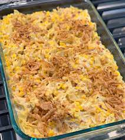

Casserole

Worlds best casserole recipe!
Making casserole can be time-consuming, but the results are well
worth the wait. You'll find a detailed ingredient list and
step by step instructions in teh recipe below, but lets go over
the basics.
It tastes real good too I tell you what!!!!
Ingredients
- 1 cup grated parmesan cheese
- 1 cup light mayo
- 1 pinch garlic powder
- 4 skinless chekcn breast halves
- 1 can of artichoke hearts
- 1 package crimini mushrooms
Directions
- Preheat oven to 350 degrees.
- Mix cheese,mayo, and garlic powder together in a bowl.
- Arrange chicken breasts in a baking dish, top with artichoke hearts, and mushrooms.
- Bake in the oven for about 30 minutes.